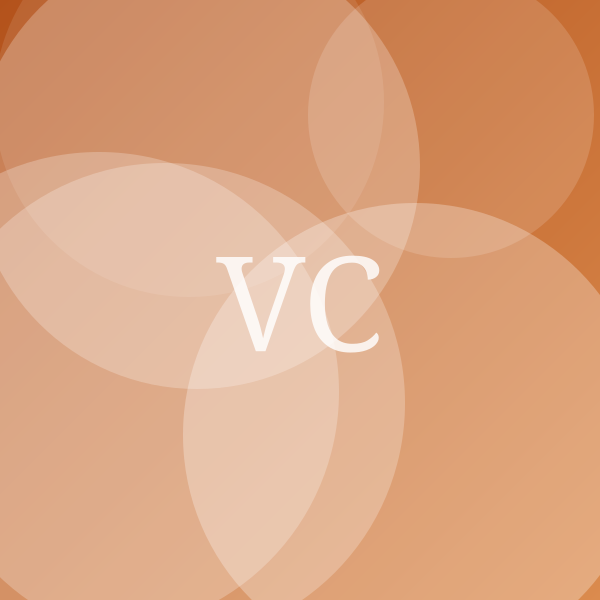
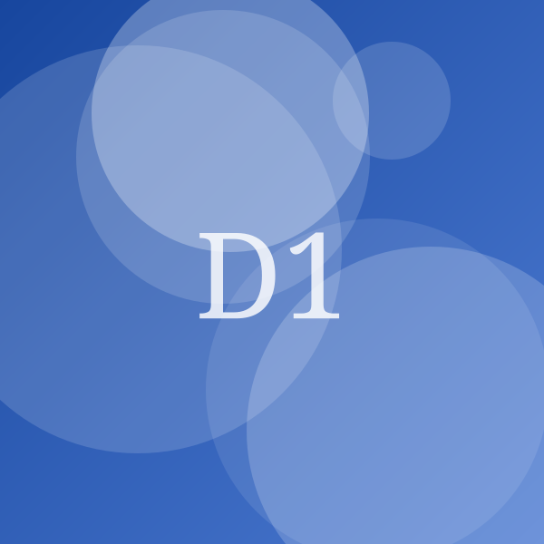

Bien choisir son vélo électrique : le guide complet
Publié en mars 2026Mis à jour en août 2026 4 min de lecture Par Yanis Belkacem, Journaliste High-Tech
Entre un vélo à 799 € et un autre à 2 790 €, la différence ne tient pas au moteur mais à ce qui l'entoure : les freins, la transmission, la batterie et la capacité du vendeur à réparer. Voici comment arbitrer, et quatre modèles pour chaque usage.
Certains liens de cet article sont des liens d'affiliation : nous pouvons percevoir une commission, sans surcoût pour vous.
Le vélo à assistance électrique est devenu un vrai moyen de transport quotidien. C'est aussi un achat durable, et parfois un investissement conséquent. Trois questions permettent de trancher rapidement : quels trajets, quel dénivelé, et où le vélo dormira-t-il ?
Moteur pédalier ou moteur moyeu ?
Le moteur pédalier, placé au niveau du pédalier, mesure votre effort et l'accompagne. La sensation est naturelle, le comportement en côte excellent, et le poids reste centré. C'est le choix à privilégier dès qu'il y a du relief ou une charge à transporter. Il coûte plus cher et impose un entretien de la transmission plus suivi.
Le moteur moyeu, dans la roue arrière, est plus simple et moins onéreux. Sur le plat, à vitesse constante, la différence se remarque peu. En côte ou au démarrage en charge, elle devient flagrante.
| Modèle | Prix indicatif | Note | Batterie | Autonomie (test) | Poids | Moteur | Garantie cadre | Voir |
|---|---|---|---|---|---|---|---|---|
| Notre choix villeVille ConfortCyclad | 1690 € | 4,4/5 | 500 Wh | 76 km | 25 kg | Pédalier | 5 ans | Voir (lien affilié, nouvelle fenêtre) |
| Pour les trajets multimodauxCompact PliantCyclad | 1290 € | 4,0/5 | 375 Wh | 48 km | 19 kg | Moyeu arrière | 5 ans | Voir (lien affilié, nouvelle fenêtre) |
| Pour transporter les enfantsLongtail FamillePortea | 2790 € | 4,2/5 | 630 Wh | 62 km | 34 kg | Pédalier | 5 ans | Voir (lien affilié, nouvelle fenêtre) |
| Le petit prixDépart 100Nedra | 799 € | 3,1/5 | 360 Wh | 37 km | 24 kg | Moyeu arrière | 2 ans | Voir (lien affilié, nouvelle fenêtre) |
Notre choix pour la ville : Cyclad Ville Confort

Notre choix ville
Ville Confort
Cyclad · Vélo à assistance électrique
4,4/5
1690 € Prix relevé le 18 août 2026
Voir le prix chez Marchand C (lien affilié, nouvelle fenêtre)Points forts
- Moteur pédalier progressif
- Batterie 500 Wh amovible
- Éclairage et porte-bagages de série
Points faibles
- 25 kg, difficile à monter à l'étage
- Pas de dérailleur électronique
Assistance progressive, batterie de 500 Wh amovible, éclairage et porte-bagages montés d'origine : c'est un vélo prêt à l'emploi, sans accessoires à racheter. Les 25 kg se sentent au moment de le monter à l'étage, ce qui en fait un vélo pour qui dispose d'un local ou d'un garage.
Pour transporter les enfants : Portea Longtail Famille
Pour transporter les enfants
Longtail Famille
Portea · Vélo à assistance électrique
4,2/5
2790 € Prix relevé le 18 août 2026
Voir le prix chez Marchand C (lien affilié, nouvelle fenêtre)Points forts
- Charge utile de 180 kg
- Béquille double très stable
- Compatible deux sièges enfants
Points faibles
- Encombrant au stationnement
- Prix
Une charge utile de 180 kg, une béquille double stable et la place pour deux sièges enfants : c'est la solution qui remplace réellement une voiture sur les trajets courts. Le stationnement demande de la place, et le prix reste élevé — même après déduction des aides.
L'autonomie : lire entre les lignes
Les valeurs affichées sont obtenues en assistance minimale, sur le plat, avec un cycliste léger et sans vent. Dans la vie réelle, comptez :
- assistance moyenne, terrain vallonné, chargé : environ la moitié de l'autonomie annoncée ;
- froid inférieur à 5 °C : 20 à 30 % de capacité en moins, temporairement ;
- batterie de plus de trois ans : perte progressive, généralement 20 % au bout de 500 cycles complets.
Un repère utile : 10 Wh par kilomètre en usage urbain mixte. Une batterie de 500 Wh donne donc de l'ordre de 50 km sans forcer.
Les aides à l'achat
Selon les périodes, une aide nationale et des aides locales peuvent se cumuler, sous conditions de ressources et de type de vélo. Les montants et les conditions évoluent régulièrement : vérifiez l'état du dispositif sur service-public.fr et auprès de votre commune, de votre intercommunalité et de votre région avant de commander. La plupart des aides exigent que la demande soit déposée après l'achat, facture à l'appui, et dans un délai précis.
Ce à quoi il faut renoncer sous 900 €

Le petit prix
Départ 100
Nedra · Vélo à assistance électrique
3,1/5
799 € Prix relevé le 18 août 2026
Voir le prix chez Marchand B (lien affilié, nouvelle fenêtre)Points forts
- Sous les 800 €
- Suffisant pour de courts trajets plats
Points faibles
- Freins à patins peu endurants
- Batterie propriétaire sans pièce de rechange annoncée
- Capteur d'assistance à retardement
À ce niveau de prix, les compromis portent sur des pièces de sécurité : freins à patins qui s'usent vite, capteur d'assistance à retardement au démarrage, batterie propriétaire sans pièce de rechange annoncée. Pour de courts trajets plats et occasionnels, cela peut suffire. Pour un usage quotidien, mieux vaut viser un modèle d'occasion révisé plutôt qu'un neuf trop bon marché.
Questions fréquentes
Faut-il assurer un vélo électrique ?
L'assurance responsabilité civile suffit légalement pour un VAE bridé à 25 km/h, mais une garantie vol est vivement conseillée au-delà de 1 000 €. Faites marquer le vélo lors de l'achat : c'est obligatoire pour les vélos neufs vendus par un professionnel.
Peut-on rouler sous la pluie ?
Oui, les moteurs et batteries sont conçus pour cela. Évitez en revanche le nettoyage au jet haute pression, qui pousse l'eau dans les roulements et les connecteurs.
Combien coûte l'entretien annuel ?
Comptez 80 à 150 € par an pour une révision, hors pièces d'usure. La transmission s'use plus vite que sur un vélo classique en raison du couple du moteur.
Complément d'informations
- Thématiques
- MobilitéVéloAides publiques
- Mots-clés
- vélo électriqueVAEautonomiemoteur pédalieraide à l'achat
- Localisation du sujet
- France
- Expertise de l'auteur
- Mobilité électrique, réparabilité
- Sélections
- ÉcoresponsableMade in France
Yanis Belkacem
Journaliste High-Tech · Smartphones, Audio, Réparabilité
Yanis suit l'électronique grand public et traque les fiches techniques trompeuses.